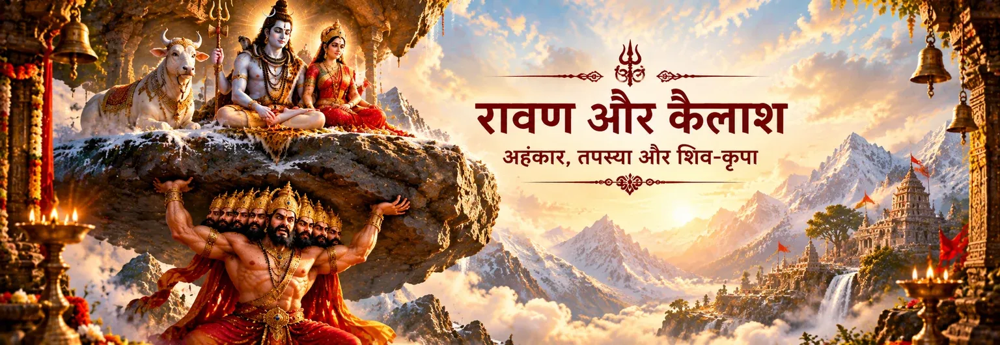

ताण्डव करते शिव
आरम्भिक चित्रों में डमरू की ध्वनि, बहती गंगा, गले के सर्प और ताण्डव की गति के माध्यम से शिव का दर्शन होता है। यहाँ लय केवल भाषा का सौंदर्य नहीं, अर्थ का भी हिस्सा है।

रावण का शिव ताण्डव स्तोत्र
शिव ताण्डव स्तोत्र संस्कृत के उन प्रसिद्ध स्तोत्रों में है जिन्हें परंपरागत रूप से रावण से जोड़ा जाता है। इसके पदों में जटाओं से बहती गंगा, मस्तक का चन्द्रमा, सर्प, डमरू, ताण्डव और शिव के दिव्य तेज का अत्यंत प्रभावशाली वर्णन मिलता है।
कैलास की कथा के साथ इसका सांस्कृतिक संबंध अत्यंत प्रबल है, पर इसके ग्रंथीय इतिहास को सावधानी से समझना चाहिए। इस लोकप्रिय स्तोत्र को वाल्मीकि रामायण का शब्दशः अंश मानकर प्रस्तुत करना उचित नहीं है। यह एक स्वतंत्र संस्कृत स्तोत्र के रूप में प्रचलित है और इसके पाठों में पदों की संख्या तथा कुछ पाठभेद मिलते हैं।
स्तोत्र के भीतर
स्तोत्र बाहरी रूप-वर्णन से आगे बढ़कर समर्पण, स्मरण और शिव-भक्ति में स्थिर रहने की आकांक्षा तक पहुँचता है।
आरम्भिक चित्रों में डमरू की ध्वनि, बहती गंगा, गले के सर्प और ताण्डव की गति के माध्यम से शिव का दर्शन होता है। यहाँ लय केवल भाषा का सौंदर्य नहीं, अर्थ का भी हिस्सा है।
स्तोत्र में शैव परंपरा के परिचित प्रतीक एक ही दृश्य-जगत में जुड़ते हैं। चन्द्रमा, गंगा, सर्प, भस्म और जटाएँ शिव की अद्भुत सुंदरता और शक्ति के प्रतीक बनते हैं।
यह स्तोत्र केवल शिव के रूप-लक्षणों की सूची नहीं रहता। आगे के पद भीतर की ओर मुड़ते हैं और भक्ति, स्मरण तथा शिव-सान्निध्य की आकांक्षा व्यक्त करते हैं।
परंपरागत पाठों में मुख्य स्तोत्र को पंचचामर छन्द से जोड़ा जाता है, जबकि कुछ पाठों में अतिरिक्त पद और पाठभेद मिलते हैं। अनुप्रास और ध्वनियों की पुनरावृत्ति ताण्डव जैसी गति और ताल का अनुभव कराती है।
परंपरा को सावधानी से पढ़ें
रावण के साथ इस स्तोत्र का संबंध भक्तिपरंपरा में गहराई से स्थापित है और संस्कृत पाठ इसे रावण के नाम से प्रस्तुत करते हैं। यह पारंपरिक संबद्धता रावण की शिव-भक्त छवि के लिए अत्यंत महत्वपूर्ण है।
लेकिन वाल्मीकि रामायण को अलग ग्रंथीय स्तर पर पढ़ना चाहिए। उसके कैलास-प्रसंग में प्रसिद्ध “जटाटवीगलज्जल...” स्तोत्र को उद्धृत स्तुति के रूप में प्रस्तुत नहीं किया गया है। इसलिए लोकप्रिय शिव ताण्डव स्तोत्र को वाल्मीकि की कथा में सीधे जोड़ने के बजाय स्वतंत्र/बाद की पाठ-परंपरा के रूप में समझना अधिक सावधान दृष्टिकोण है।
भक्तिपरक चिंतन
इसकी ध्वनियों और लय की पुनरावृत्ति श्रोता को केवल अर्थ से नहीं, स्वयं उच्चारण और नाद के माध्यम से भी साधना का अनुभव कराती है।
स्तोत्र में ताण्डव की उग्रता, सर्प और भयंकर प्रतीकों के साथ चन्द्रमा, गंगा और दिव्य सौंदर्य एक साथ आते हैं — यह शैव दर्शन की विरोधों को साथ रखने वाली दृष्टि को दर्शाता है।
परंपरा रावण को एक ओर शक्तिशाली प्रतिपक्षी और दूसरी ओर विद्वान, उत्कट शिव-भक्त — दोनों रूपों में स्मरण करती है। यह स्तोत्र उसी भक्तिपरक चित्र का हिस्सा है।
स्तोत्र के ऐतिहासिक रचयिता के बारे में जो भी निष्कर्ष निकाला जाए, इसकी भक्तिपरंपरा वास्तविक और जीवित है। पीढ़ियों ने इसके माध्यम से शिव के रूप, नाद और सान्निध्य का ध्यान किया है।
अंतिम चिंतन
शिव ताण्डव स्तोत्र की स्थायी शक्ति केवल रावण से जुड़ी कथा में नहीं है। इसकी शक्ति इस बात में भी है कि यह ध्वनि के माध्यम से शिव को सजीव कर देता है — जटाओं में गंगा, मस्तक पर चन्द्रमा, सर्प, डमरू और ब्रह्मांडीय नृत्य की अविराम लय। इसके ग्रंथीय इतिहास को समझते हुए पढ़ा जाए तो यह संस्कृत की प्रभावशाली भक्तिकाव्य-परंपरा और रावण की शिव-भक्ति की दीर्घ सांस्कृतिक स्मृति — दोनों का हिस्सा बनकर सामने आता है।
अक्सर पूछे जाने वाले प्रश्न
परंपरा इसे रावण-कृत मानती है और संस्कृत पाठ-संग्रह इसे उसके नाम से प्रस्तुत करते हैं। लेकिन ऐतिहासिक रचनाकार के प्रश्न पर अधिक सावधान भाषा यही है कि इसे “परंपरागत रूप से रावण को समर्पित” कहा जाए।
प्रसिद्ध स्तोत्र को वाल्मीकि रामायण में उद्धृत स्तोत्र के रूप में प्रस्तुत नहीं किया गया है। रामायण में रावण और शिव से जुड़े कैलास-प्रसंग हैं, जबकि लोकप्रिय स्तोत्र स्वतंत्र रूप से प्रचलित है।
इसमें ताण्डव, जटाएँ, गंगा, चन्द्रमा, सर्प, डमरू और अन्य शैव प्रतीकों के माध्यम से शिव की स्तुति की गई है और आगे व्यक्तिगत भक्ति तथा स्मरण की ओर गति होती है।
अलग-अलग पाठ-संग्रहों में पाठभेद और अतिरिक्त समापन-पद मिलते हैं। संस्कृत डॉक्यूमेंट्स भी लगभग 15–19 पदों वाले पाठों का उल्लेख करता है। इसलिए किसी संस्करण को दूसरे के बिल्कुल समान मानना उचित नहीं।